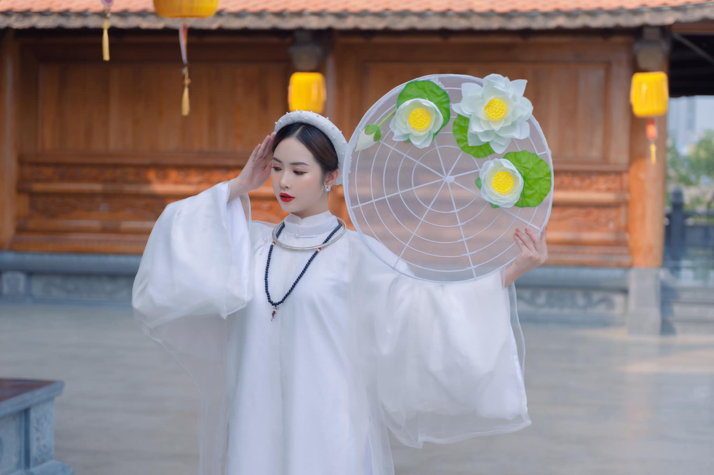
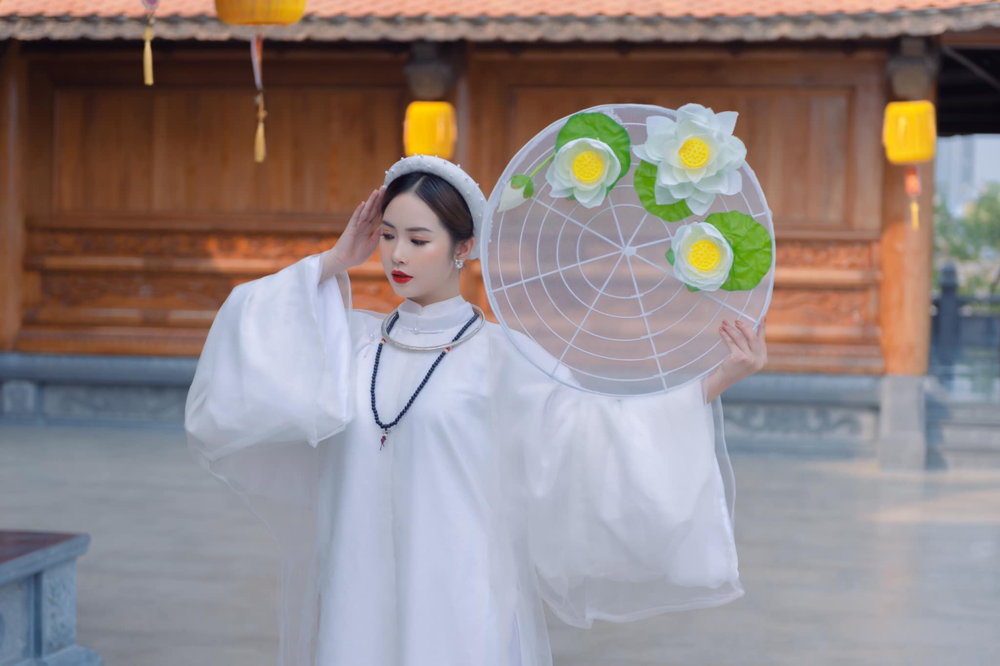
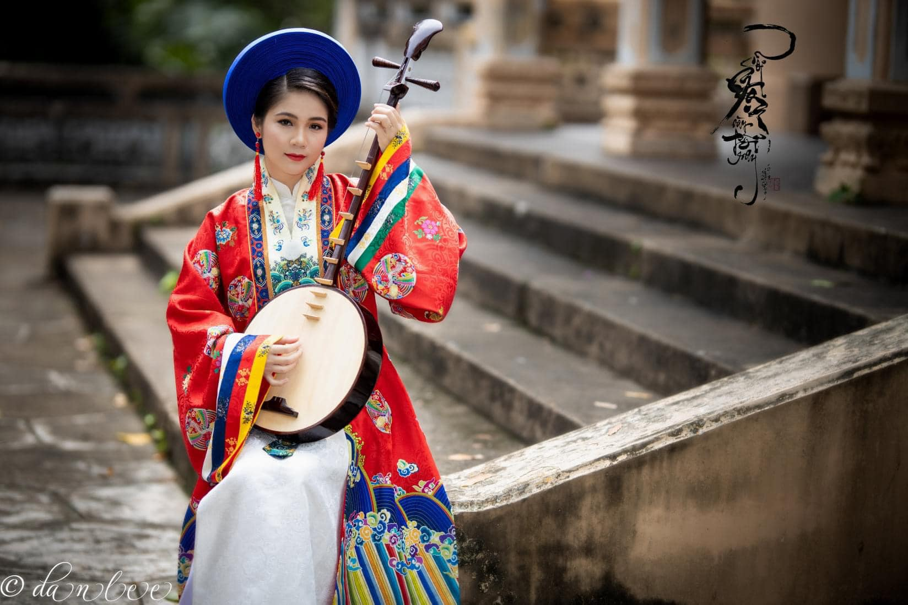
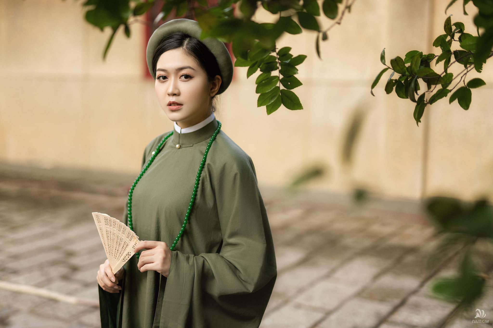
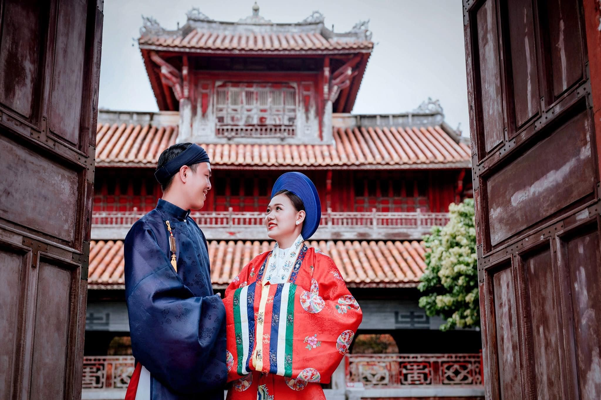
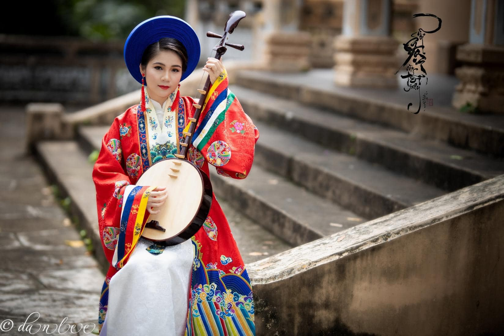
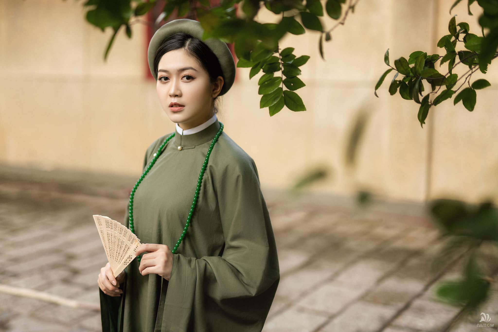
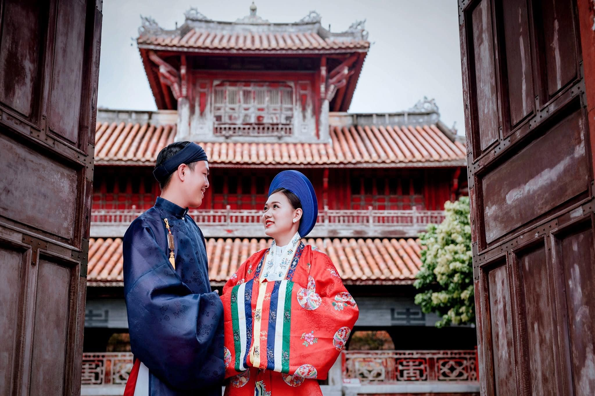

Lời Ngỏ
Ở nước ta, trước nay khi tìm hiểu văn hóa cổ của dân tộc, nhất là về cách ăn mặc, người ta không biết phải trông vào đâu. Các sách cổ như Lịch triều hiến chương hay các sách “Khâm định”, “Hội điển” đôi khi có nhắc đến một vài kiểu y phục, mũ mão, nhưng cũng chỉ sơ lược, và thường không có hình ảnh dẫn chứng. Trong thời đại của các cổ tác gia đó, khi những loại trang phục được nhắc đến trong sách của họ vẫn còn thông dụng, tên gọi họ liệt kê vẫn là các vật dụng đời thường, thì việc giải thích về chúng là không cần thiết. Nhưng tương tự, vài năm nữa đây phần đông giới trẻ sẽ không mường tượng nổi cái áo đại cán như thế nào. Văn hóa trang phục truyền thống Việt Nam bị mất dấu tích sâu đậm nhất khi nền văn hóa Tây phương do người Pháp đưa vào được áp đặt lên xã hội Việt Nam khiến cho ngày nay không ai còn biết ông bà ta ngày xưa ăn mặc, sinh sống như thế nào. Và khi cần tái hiện lối ăn mặc của người Việt trong quá khứ, người ta “sáng tác” một cách tùy tiện. Phim ảnh là phương tiện truyền bá văn hóa cho giới trẻ hữu hiệu và trực tiếp, nhưng hiện nay khi sự giao lưu văn hóa trở nên dễ dàng thì trang phục truyền thống Việt Nam trong phim ảnh và trên sân khấu lại mang đậm dấu ấn của phim ảnh Trung Quốc. Với mối lo ngại trên, trang Việt Phục của nhóm cổ phục được ra đời để gợi nhớ những bộ trang phục tuyệt đẹp chốn hậu cung của 2 triều đại phát triển nhất của y phục nữ nhi đó chính là triều Lê và triều Nguyễn nước ta.
-Việt Phục-
 

Cổ Phục Việt Nam
Những bộ trang phục tuyệt đẹp chốn hậu cung của 2 triều đại phát triển nhất của y phục nữ nhi đó chính là triều Lê với Áo Tấc và triều Nguyễn với Áo Nhật Bình ở nước ta.
 





Ào Nhật Bình
Áo Nhật Bình là trang phục của Hoàng tộc, là thường phục của Hoàng Hậu, Phi tần và Công chúa. Áo Nhật Bình là kiểu áo đối khâm, có cổ hình chữ nhật to bản chạy dọc từ cổ đến ngực. Hai vạt áo sẽ được dùng dây buộc lại. Cổ phục này có tên là “Nhật Bình” bởi hoa văn ở cổ áo khi ghép lại tạo thành một hình chữ nhật ngay trước ngực. Sau thời nhà Nguyễn, bộ áo này trở thành trang phục giới quý tộc mặc vào những dịp quan trọng.
Xem ThêmÀo Tấc
Áo Tấc là loại lễ phục trang trọng thời Nguyễn thường được sử dụng trong các dịp trọng đại như kết hôn, lễ tết, tang lễ… Đây là loại trang phục phổ biến từ dân thường cho đến quan lại, vua chúa đều mặc vào thời Nguyễn. Loại áo này thường gồm một áo ngũ thân dài quá đầu gối với tay thụng dài bằng gấu (vì vậy còn được gọi là áo lễ hay áo ngũ thân), cài khuy bên phải, áo lót bên trong màu trắng. Mặc cùng với quần dài trắng và khăn vấn.
Xem Thêm